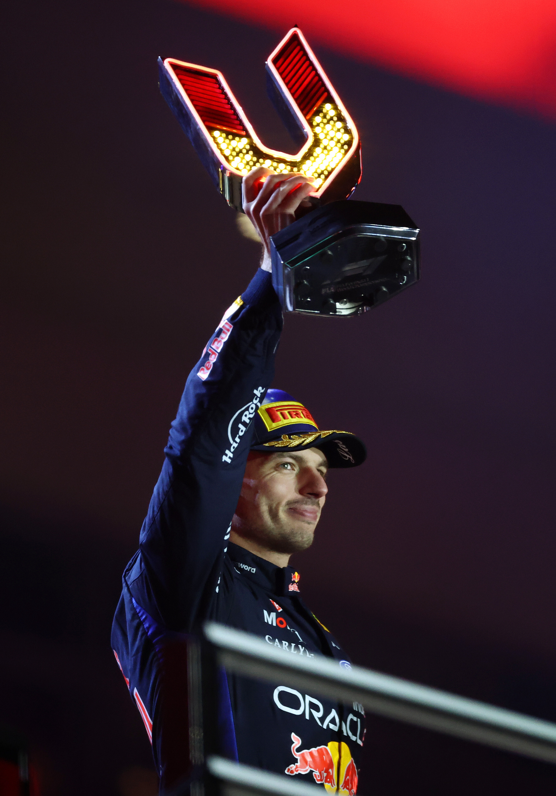

Max Verstappen venceu o Grande Prêmio de Las Vegas de Fórmula 1 de 2026, disputado na noite deste sábado, 21 de novembro, no Las Vegas Strip Circuit, nos Estados Unidos. O holandês da Red Bull largou da pole position e conquistou sua terceira vitória no circuito norte-americano após uma das corridas mais movimentadas da temporada.
A prova, válida pela 21ª etapa do Campeonato Mundial, teve 50 voltas e foi marcada por sucessivas trocas de liderança, disputas intensas e problemas que mudaram a composição do pódio nos momentos finais.
Lando Norris terminou na segunda colocação, apenas 0s639 atrás do vencedor, enquanto Oscar Piastri completou o pódio, garantindo dois lugares entre os três primeiros para a McLaren. Kimi Antonelli, campeão mundial antecipado de 2026.
Como foi a corrida: 35 mudanças de liderança
O Grande Prêmio começou com Verstappen mantendo a primeira posição, mas George Russell demonstrou desde as primeiras voltas que a Mercedes tinha condições de disputar a vitória. O britânico ultrapassou o holandês na segunda volta, iniciando uma sequência de disputas que se estenderia por praticamente toda a prova.
As longas retas do circuito favoreceram o uso do vácuo e as ultrapassagens. Verstappen recuperava a liderança, mas logo voltava a ser pressionado. Isack Hadjar também participou das disputas iniciais, chegando a ocupar a segunda colocação.
Ao todo, o GP de Las Vegas registrou 35 mudanças de liderança, número que ilustra a intensidade da disputa. Mesmo sob pressão, Verstappen conseguiu responder aos ataques e permaneceu entre os protagonistas durante as 50 voltas.
Kimi Antonelli também entrou na briga pela vitória. O italiano havia registrado o melhor tempo da classificação, mas largou em sexto por causa de uma punição de cinco posições no grid relacionada à troca de componentes da unidade de potência.
Com bom ritmo de corrida, Antonelli ganhou posições, superou Russell e chegou a liderar a prova.
Acidente movimenta as estratégias
Na 17ª volta, uma colisão entre Sergio Pérez, da Cadillac, e Rafael Câmara, da Haas, provocou a entrada do Safety Car. O mexicano atingiu a barreira e abandonou, enquanto o brasileiro conseguiu continuar na disputa.
A neutralização abriu uma oportunidade para as equipes realizarem suas paradas nos boxes. A Red Bull aproveitou o momento para atender seus dois pilotos em sequência, enquanto a Ferrari adotou uma estratégia diferente com Hamilton, que permaneceu na pista inicialmente.
Outro incidente aconteceu durante o período da mesma interrupção. Arvid Lindblad, da Racing Bulls, rodou atrás do Safety Car e não conseguiu retomar a corrida, encerrando sua participação.
A relargada aconteceu na 25ª volta, com Verstappen novamente na liderança. Russell voltou a pressionar, enquanto Norris, Piastri e Antonelli avançavam na classificação.
O ritmo intenso manteve a disputa aberta até as últimas voltas, sem que Verstappen conseguisse construir uma vantagem confortável sobre seus adversários.
Mercedes perde o pódio nas últimas voltas
A Mercedes parecia encaminhar um resultado expressivo em Las Vegas, mas os acontecimentos finais comprometeram a corrida de seus dois pilotos.
Na 48ª volta, Russell tentou ultrapassar Antonelli para recuperar a segunda colocação. O britânico travou os pneus na curva 5, passou reto e atingiu a barreira de proteção. Apesar do impacto, conseguiu retornar à pista, mas caiu para a nona posição.
Antonelli também enfrentou dificuldades. Depois de disputar a liderança com Verstappen, o italiano apresentou um problema de potência no início da última volta e acabou ultrapassado pelas duas McLaren.
Norris assumiu a segunda colocação, seguido por Piastri. Sem a pressão direta da Mercedes, Verstappen conseguiu completar a volta final na liderança e confirmou a vitória.
O resultado representou a quarta vitória do holandês na temporada de 2026 e a 75ª de sua carreira na Fórmula 1.
Veja os melhores momentos da corrida abaixo:
McLaren conquista pódio duplo
A McLaren foi uma das principais beneficiadas pelos acontecimentos finais, mas a trajetória de seus pilotos até o pódio também teve dificuldades.
Norris largou em terceiro, perdeu rendimento durante o primeiro trecho da corrida e chegou a cair para a 11ª posição. O britânico encontrou dificuldades com a utilização da energia da bateria e a velocidade nas retas, mas conseguiu recuperar terreno.
Piastri enfrentou um desafio ainda maior. Punido com dez posições no grid, o australiano largou em 17º e precisou atravessar o pelotão para alcançar os primeiros colocados.
Com ultrapassagens e uma recuperação consistente, os dois pilotos chegaram às voltas finais em condições de disputar posições importantes. Os problemas da Mercedes permitiram que Norris terminasse em segundo e Piastri em terceiro.
O resultado foi especialmente importante para a McLaren na disputa pelo terceiro lugar do Mundial de Construtores, reduzindo para nove pontos a diferença em relação à Red Bull.
Ferrari tem colisão entre Hamilton e Leclerc
A equipe italiana também protagonizou um dos episódios mais marcantes da corrida. Lewis Hamilton e Charles Leclerc se envolveram em uma colisão enquanto disputavam posições no pelotão intermediário.
Durante uma tentativa de ultrapassagem na curva 7, Leclerc atingiu o carro do companheiro de equipe, provocando um rodopio de Hamilton e fazendo o britânico perder posições.
Os comissários consideraram Leclerc responsável pelo incidente e aplicaram uma penalidade de dez segundos ao monegasco.
Hamilton também recebeu uma punição de dez segundos, mas por outro motivo: sair da pista e obter vantagem durante uma disputa anterior com Norris.
Apesar dos contratempos, Hamilton conseguiu se recuperar e terminou em sétimo. Leclerc, por sua vez, recebeu a bandeirada na décima colocação.
Como foram os brasileiros em Las Vegas
Os dois pilotos terminaram a corrida fora da zona de pontuação.
Gabriel Bortoleto, da Audi, concluiu a prova na 12ª colocação, logo atrás do companheiro Nico Hülkenberg, que terminou em 11º. A equipe ficou próxima de conquistar pontos, mas não conseguiu colocar nenhum de seus carros entre os dez primeiros.
Rafael Câmara, da Haas, terminou em 16º. O brasileiro esteve envolvido no acidente com Sergio Pérez, que provocou o Safety Car, mas conseguiu continuar na corrida e alcançar a bandeirada.
Câmara completou sua segunda participação em Grandes Prêmios de Fórmula 1, enquanto Bortoleto permaneceu com 14 pontos no campeonato.
Resultado completo do GP de Las Vegas 2026
Confira a classificação final da corrida, após a aplicação das penalidades:
- 1º – Max Verstappen (Red Bull)
- 2º – Lando Norris (McLaren)
- 3º – Oscar Piastri (McLaren)
- 4º – Kimi Antonelli (Mercedes)
- 5º – Pierre Gasly (Alpine) –
- 6º – Franco Colapinto (Alpine)
- 7º – Lewis Hamilton (Ferrari)
- 8º – Carlos Sainz (Williams)
- 9º – George Russell (Mercedes)
- 10º – Charles Leclerc (Ferrari)
- 11º – Nico Hülkenberg (Audi)
- 12º – Gabriel Bortoleto (Audi)
- 13º – Oliver Bearman (Haas)
- 14º – Liam Lawson (Racing Bulls)
- 15º – Isack Hadjar (Red Bull)
- 16º – Rafael Câmara (Haas)
- 17º – Lance Stroll (Aston Martin)
- 18º – Valtteri Bottas (Cadillac)
- 19º – Fernando Alonso (Aston Martin) – abandono
- Arvid Lindblad (Racing Bulls) – abandono
- Sergio Pérez (Cadillac) – abandono
- Alexander Albon (Williams) – não largou
Classificação do Mundial de Pilotos
Com o título de 2026 já assegurado por Kimi Antonelli, as atenções se voltam para a disputa pelas demais posições do campeonato.
Verstappen fortaleceu sua condição de vice-líder ao conquistar mais 25 pontos em Las Vegas. Hamilton permanece em terceiro, enquanto Russell e Norris aparecem empatados em pontos.
Confira os dez primeiros colocados:
- 1º – Kimi Antonelli (Mercedes) – 402 pontos
- 2º – Max Verstappen (Red Bull) – 304 pontos
- 3º – Lewis Hamilton (Ferrari) – 267 pontos
- 4º – George Russell (Mercedes) – 264 pontos
- 5º – Lando Norris (McLaren) – 264 pontos
- 6º – Charles Leclerc (Ferrari) – 250 pontos
- 7º – Oscar Piastri (McLaren) – 167 pontos
- 8º – Isack Hadjar (Red Bull) – 122 pontos
- 9º – Liam Lawson (Racing Bulls) – 89 pontos
- 10º – Pierre Gasly (Alpine) – 52 pontos
Classificação do Mundial de Construtores
A Mercedes também já garantiu o título entre as equipes e segue na liderança da classificação.
- 1º – Mercedes – 666 pontos
- 2º – Ferrari – 517 pontos
- 3º – Red Bull – 440 pontos
- 4º – McLaren – 431 pontos
- 5º – Racing Bulls – 114 pontos
- 6º – Alpine – 87 pontos
- 7º – Haas – 31 pontos
- 8º – Audi – 28 pontos
- 9º – Williams – 16 pontos
- 10º – Aston Martin – 7 pontos
- 11º – Cadillac – 0 pontos
A principal disputa nas etapas restantes envolve Red Bull e McLaren pela terceira posição. A equipe de Verstappen mantém uma vantagem de apenas nove pontos, enquanto a McLaren chega fortalecida pelo pódio duplo conquistado em Las Vegas.
Próxima corrida será o GP do Catar
Após a etapa norte-americana, a Fórmula 1 segue para o Oriente Médio, onde serão disputadas as duas últimas corridas da temporada de 2026.
O GP do Catar acontece entre os dias 27 e 29 de novembro, no Circuito Internacional de Lusail, e será a penúltima etapa do campeonato.
Na sequência, o GP de Abu Dhabi, entre 4 e 6 de dezembro, encerra oficialmente a temporada no Circuito de Yas Marina.
Embora os títulos mundiais de Pilotos e Construtores já estejam definidos, as corridas finais ainda serão importantes para determinar as posições restantes dos campeonatos.
Depois de uma prova marcada por 35 mudanças de liderança, acidentes e reviravoltas até a última volta, a Fórmula 1 deixa Las Vegas com Verstappen fortalecido na vice-liderança, a McLaren mais próxima da Red Bull e novas disputas abertas para o encerramento de 2026.